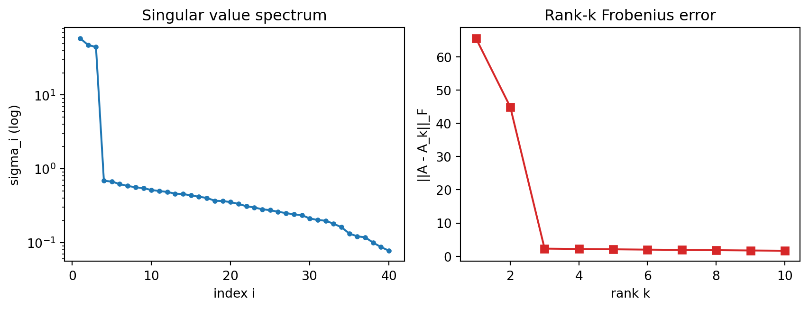

Linear algebra is the language in which modern machine learning is written. Data arrives as matrices, models transform vectors, and learning itself is the search for a good linear (or locally linear) map. Among all the tools the subject offers, the decomposition of a matrix into simpler structural pieces is the most consequential. Eigenvalues reveal the intrinsic axes along which a linear map acts by pure scaling, the singular value decomposition extends that insight to every matrix, and low-rank approximation turns these ideas into the workhorse behind dimensionality reduction, compression, and an increasingly rich understanding of how neural networks train. This chapter develops the theory and then connects it to practice.
24.1 1. Eigenvalues and Eigenvectors
24.1.1 1.1 The defining equation
Let \(A\) be a square matrix of size \(n \times n\) with real or complex entries. A nonzero vector \(v\) is an eigenvector of \(A\) with eigenvalue \(\lambda\) when
\[
A v = \lambda v .
\]
The matrix \(A\) generally rotates, shears, and scales the vectors it acts on, but along an eigenvector it does something simple. It only stretches or compresses by the factor \(\lambda\), leaving the direction fixed (or reversed, if \(\lambda\) is negative). Eigenvectors are the directions that a linear map respects, and eigenvalues record how strongly the map acts along them.
Here \(A \in \mathbb{R}^{n \times n}\) (or \(\mathbb{C}^{n \times n}\)) is the matrix, \(v \in \mathbb{C}^{n}\) with \(v \neq 0\) is the eigenvector, \(\lambda \in \mathbb{C}\) is the eigenvalue, and \(I\) is the \(n \times n\) identity matrix. The condition \(Av = \lambda v\) rearranges to \((A - \lambda I) v = 0\). For a nonzero \(v\) to exist, the linear system \((A - \lambda I)v = 0\) must have a nontrivial solution, which happens exactly when the matrix \(A - \lambda I\) is singular, which in turn means its determinant vanishes:
\[
p(\lambda) = \det(A - \lambda I) = 0 .
\]
This is the characteristic polynomial of \(A\). Expanding the determinant shows \(p\) is a degree \(n\) polynomial in \(\lambda\),
whose roots are the eigenvalues. Over the complex numbers, the fundamental theorem of algebra guarantees a degree \(n\) polynomial has \(n\) roots counted with multiplicity, so every square matrix has exactly \(n\) eigenvalues in \(\mathbb{C}\), although some may coincide and some may be complex even when \(A\) is real. The multiplicity of a root as a zero of \(p\) is the algebraic multiplicity of that eigenvalue, while the dimension of the solution space of \((A - \lambda I)v = 0\) is its geometric multiplicity; the geometric multiplicity never exceeds the algebraic one.
As a worked computation, take the symmetric matrix
so by the quadratic formula \(\lambda = \tfrac{7 \pm \sqrt{49 - 44}}{2} = \tfrac{7 \pm \sqrt{5}}{2}\), giving \(\lambda_1 \approx 4.618\) and \(\lambda_2 \approx 2.382\). Their sum is \(7 = \operatorname{tr}(A)\) and their product is \(11 = \det(A)\), matching the identities below. The eigenvector for \(\lambda\) satisfies \((4 - \lambda)x_1 + x_2 = 0\), so \(x_2 = (\lambda - 4)\,x_1\). Substituting \(\lambda_1\) gives \(v_1 \propto (1,\, \lambda_1 - 4) = (1,\, 0.618)\), and \(\lambda_2\) gives \(v_2 \propto (1,\, \lambda_2 - 4) = (1,\, -1.618)\); one checks \(v_1^\top v_2 = 1 + (0.618)(-1.618) = 0\), the orthogonality that the spectral theorem in Section 3 guarantees for symmetric matrices.
Because it is upper triangular, its eigenvalues are the diagonal entries, \(\lambda_1 = 2\) and \(\lambda_2 = 3\). Solving \((A - 2I)v = 0\) gives the eigenvector \(v_1 = (1, 0)\), and solving \((A - 3I)v = 0\) gives \(v_2 = (1, 1)\). Any input vector can be written as a combination of these two directions, and \(A\) simply scales the first component by \(2\) and the second by \(3\). The whole action of the matrix, which looks like a tangle of shear and stretch in standard coordinates, becomes two independent scalings once we change to the eigenvector basis. That change of viewpoint is the heart of diagonalization.
24.1.3 1.3 Trace, determinant, and the spectrum
Two quantities tie the eigenvalues to the entries of \(A\). The sum of the eigenvalues equals the trace, and the product equals the determinant:
These identities give quick sanity checks and explain why a matrix is invertible exactly when no eigenvalue is zero. The set of eigenvalues is called the spectrum, and its largest magnitude, the spectral radius, controls the long-run behavior of repeated multiplication \(A^k\). This last fact is why eigenvalues govern the stability of iterative methods, the convergence of power iteration, and, as we will see, the dynamics of gradient descent.
24.2 2. Diagonalization
24.2.1 2.1 Eigenbasis and factorization
Suppose \(A\) has \(n\) linearly independent eigenvectors \(v_1, \dots, v_n\) with eigenvalues \(\lambda_1, \dots, \lambda_n\). Stack the eigenvectors as columns of a matrix \(V = [\,v_1 \mid \cdots \mid v_n\,]\) and place the eigenvalues on the diagonal of \(\Lambda = \operatorname{diag}(\lambda_1, \dots, \lambda_n)\). The key step is to read the \(n\) separate equations \(A v_i = \lambda_i v_i\) as a single matrix equation. Column \(i\) of the product \(AV\) is \(A v_i\), and column \(i\) of the product \(V\Lambda\) is \(\lambda_i v_i\), because right multiplication by a diagonal matrix scales each column. Since the two products agree column by column,
\[
AV = V\Lambda .
\]
Because the columns of \(V\) are linearly independent, \(V\) is invertible. Multiplying on the right by \(V^{-1}\) gives
\[
A = V \Lambda V^{-1} .
\]
This is the diagonalization of \(A\). It says that in the coordinate system defined by the eigenvectors, \(A\) acts as the diagonal matrix \(\Lambda\). The matrix \(V^{-1}\) translates an input into eigenvector coordinates, \(\Lambda\) scales each coordinate, and \(V\) translates back.
24.2.2 2.2 Why diagonalization is useful
Once \(A = V\Lambda V^{-1}\), powers of \(A\) become trivial because the intermediate factors telescope. Writing \(A^2 = (V\Lambda V^{-1})(V\Lambda V^{-1})\), the inner pair \(V^{-1} V = I\) cancels, leaving \(A^2 = V \Lambda^2 V^{-1}\). Repeating the cancellation \(k - 1\) times gives the general rule
\[
A^k = V \Lambda^k V^{-1},
\]
and \(\Lambda^k = \operatorname{diag}(\lambda_1^k, \dots, \lambda_n^k)\) is just the diagonal of \(\lambda_i^k\), since powering a diagonal matrix powers each diagonal entry independently. Computing the hundredth power of a matrix collapses to raising scalars to the hundredth power. The same idea defines functions of matrices. The matrix exponential, central to the solution of linear dynamical systems and to continuous time models, is
has the repeated eigenvalue \(1\) but only a one dimensional eigenspace, so it lacks a full set of independent eigenvectors. Such defective matrices require the more general Jordan form. Two reassurances follow. First, defective matrices are rare in the sense that an arbitrarily small perturbation makes a matrix diagonalizable. Second, and more important for machine learning, the matrices we care most about are symmetric, and symmetric matrices are always diagonalizable in an especially clean way. That is the spectral theorem.
24.3 3. The Spectral Theorem for Symmetric Matrices
24.3.1 3.1 Statement
A real matrix \(A\) is symmetric when \(A = A^\top\). The spectral theorem states that every real symmetric matrix has real eigenvalues and an orthonormal basis of eigenvectors. Concretely, there exists an orthogonal matrix \(Q\), meaning \(Q^\top Q = I\), and a real diagonal matrix \(\Lambda\) such that
\[
A = Q \Lambda Q^\top .
\]
Because \(Q\) is orthogonal, its inverse is its transpose, so this is a diagonalization in which the change of basis is a pure rotation or reflection. There is no stretching or skewing in the coordinate change itself, only in the diagonal scaling \(\Lambda\).
24.3.2 3.2 Why symmetry forces orthogonality
A short argument shows eigenvectors for distinct eigenvalues are orthogonal. Suppose \(A v_1 = \lambda_1 v_1\) and \(A v_2 = \lambda_2 v_2\). Then
\[
\lambda_1 \, v_2^\top v_1 = v_2^\top A v_1 = (A v_2)^\top v_1 = \lambda_2 \, v_2^\top v_1,
\]
using \(A = A^\top\) in the middle step. If \(\lambda_1 \neq \lambda_2\), the only way the outer equality holds is \(v_2^\top v_1 = 0\). The eigenvectors point in perpendicular directions. Repeated eigenvalues span a subspace within which we can always choose an orthonormal basis, so the full orthonormal set always exists.
24.3.3 3.3 Positive definiteness and quadratic forms
Symmetric matrices arise as covariance matrices, Hessians of scalar functions, and Gram matrices of inner products, so their structure is everywhere in machine learning. A symmetric matrix defines a quadratic form \(f(x) = x^\top A x\), and in the eigenbasis this becomes \(\sum_i \lambda_i y_i^2\) where \(y = Q^\top x\). The signs of the eigenvalues classify the form. If all \(\lambda_i > 0\) the matrix is positive definite and the quadratic is a bowl with a unique minimum. Mixed signs give a saddle. This classification is exactly how the eigenvalues of a Hessian distinguish minima, maxima, and saddle points in optimization, a point we return to in the final section.
24.4 4. The Singular Value Decomposition
24.4.1 4.1 From square to rectangular
Eigenvalue decomposition applies only to square matrices, and cleanly only to symmetric ones. Most data matrices are rectangular, with \(m\) samples and \(n\) features. The singular value decomposition, or SVD, extends the spectral idea to every matrix whatsoever. For any real matrix \(A\) of size \(m \times n\) there exist orthogonal matrices \(U\) of size \(m \times m\) and \(V\) of size \(n \times n\), together with a rectangular diagonal matrix \(\Sigma\) of size \(m \times n\) holding nonnegative entries, such that
\[
A = U \Sigma V^\top .
\]
Here \(U = [\,u_1 \mid \cdots \mid u_m\,]\) is \(m \times m\) orthogonal, \(V = [\,v_1 \mid \cdots \mid v_n\,]\) is \(n \times n\) orthogonal, and \(\Sigma\) is \(m \times n\) with \(\Sigma_{ii} = \sigma_i\) on its main diagonal and zeros elsewhere. The diagonal entries \(\sigma_1 \geq \sigma_2 \geq \dots \geq 0\) are the singular values. The columns of \(U\) are the left singular vectors and the columns of \(V\) are the right singular vectors. Geometrically, every linear map factors into a rotation or reflection \(V^\top\), a coordinate axis scaling \(\Sigma\), and another rotation or reflection \(U\). A unit sphere maps to an ellipsoid whose semi axis lengths are the singular values and whose axis directions are the columns of \(U\).
24.4.2 4.2 Connection to the spectral theorem
The SVD is not independent of eigenvalue theory; it is the spectral theorem applied to the symmetric matrices built from \(A\). Consider \(A^\top A\), which is symmetric and positive semidefinite. Substituting the SVD gives
\[
A^\top A = V \Sigma^\top U^\top U \Sigma V^\top = V (\Sigma^\top \Sigma) V^\top .
\]
where the orthogonality \(U^\top U = I\) collapsed the middle factor. So the right singular vectors \(V\) are the eigenvectors of \(A^\top A\), and the squared singular values \(\sigma_i^2\) are its eigenvalues. The same computation on \(A A^\top = U (\Sigma \Sigma^\top) U^\top\) shows the left singular vectors \(U\) are its eigenvectors. Because \(A^\top A\) is symmetric positive semidefinite, its eigenvalues are real and nonnegative, so the singular values \(\sigma_i = \sqrt{\lambda_i(A^\top A)}\) are well defined, real, and nonnegative. The left and right vectors are linked through the matrix itself: for each nonzero singular value, \(A v_i = \sigma_i u_i\), which is how one recovers \(U\) from \(V\) once the eigenproblem for \(A^\top A\) is solved. This construction also proves that the SVD always exists, even for defective or rank deficient matrices, since the spectral theorem applies to the symmetric matrix \(A^\top A\) regardless of any pathology in \(A\).
24.4.3 4.3 Rank, range, and numerical reliability
The number of nonzero singular values equals the rank of \(A\), and the singular vectors give orthonormal bases for the four fundamental subspaces. In finite precision arithmetic the singular values also quantify numerical sensitivity. The condition number, the ratio \(\sigma_1 / \sigma_r\) of largest to smallest nonzero singular value, measures how much input error can be amplified when solving a linear system. A large condition number signals an ill conditioned problem, which is why practitioners monitor singular values when fitting linear models or inverting Gram matrices.
# Conceptual shapes, A is m by n
U : m x m orthogonal, left singular vectors
Sigma : m x n diagonal, sigma_1 >= sigma_2 >= ... >= 0
V^T : n x n orthogonal, right singular vectors
A = U Sigma V^T
24.5 5. Low-Rank Approximation and the Eckart-Young Theorem
24.5.1 5.1 Truncating the SVD
Write the SVD as a sum of rank one pieces, one per nonzero singular value. Expanding the product \(U \Sigma V^\top\) and using that \(\Sigma\) is diagonal, only the paired columns survive, giving
\[
A = \sum_{i=1}^{r} \sigma_i \, u_i v_i^\top,
\]
where \(r\) is the rank of \(A\). Each term \(\sigma_i u_i v_i^\top\) is an outer product: \(u_i\) is an \(m\) vector, \(v_i^\top\) is a \(1 \times n\) row, and their product is an \(m \times n\) rank one matrix, scaled by \(\sigma_i\). Because the singular values are ordered, the early terms carry the most energy. Keeping only the top \(k\) terms gives the truncated approximation
a matrix of rank at most \(k\) that captures the dominant structure of \(A\) while ignoring the small singular value directions.
24.5.2 5.2 The optimality theorem
The Eckart-Young theorem makes this precise. Among all matrices of rank at most \(k\), the truncated SVD \(A_k\) is the best possible approximation to \(A\), simultaneously in the spectral norm and the Frobenius norm. The error is governed by the discarded singular values:
The error formulas follow directly from the truncated expansion: the residual \(A - A_k = \sum_{i > k} \sigma_i u_i v_i^\top\) is itself in SVD form with singular values \(\sigma_{k+1}, \sigma_{k+2}, \dots\), so its spectral norm (the largest remaining singular value) is \(\sigma_{k+1}\) and its Frobenius norm (the root sum of squared singular values) is \(\sqrt{\sum_{i>k}\sigma_i^2}\). The optimality half of the theorem argues that no rank \(k\) matrix \(B\) can do better: if \(\|A - B\|_2 < \sigma_{k+1}\), then \(A\) and \(B\) would have to agree on a subspace of dimension \(k+1\) on which \(A\) acts with singular values at least \(\sigma_{k+1}\), contradicting that \(B\) has rank only \(k\). No other rank \(k\) matrix does better. This is a remarkable guarantee. It says the naive procedure of simply dropping the smallest singular values is provably optimal, not merely a reasonable heuristic. Whenever the singular values decay quickly, a low rank approximation reproduces the original matrix to high accuracy with a tiny fraction of the storage, since \(A_k\) needs only \(k(m + n + 1)\) numbers instead of \(mn\).
The best rank one approximation keeps the top term, \(A_1 = \sigma_1 u_1 v_1^\top = \left[\begin{smallmatrix} 3 & 0 \\ 0 & 0 \end{smallmatrix}\right]\). The error is \(A - A_1 = \left[\begin{smallmatrix} 0 & 0 \\ 0 & 1 \end{smallmatrix}\right]\), whose spectral norm is \(1 = \sigma_2\) and whose Frobenius norm is also \(1 = \sqrt{\sigma_2^2}\), exactly as the formulas predict. The runnable example below verifies both identities numerically on a larger matrix.
24.5.3 5.3 Where it shows up
Low rank approximation underlies image compression, where a photograph stored as a pixel matrix is reconstructed from a handful of singular components. It powers latent semantic analysis in text, recommender systems that complete a sparse user item matrix, and noise reduction in signal processing where signal lives in a low dimensional subspace and noise spreads across all directions. The recurring theme is that real data is approximately low rank, and the SVD finds that structure optimally.
24.5.4 5.4 Worked example: SVD and the Eckart-Young identities
The example below builds an approximately low rank matrix, computes its SVD, and confirms the two Eckart-Young error formulas numerically. The Python tab runs here with a fixed seed; the Julia and Rust tabs are idiomatic illustrations of the same computation. The script prints the leading singular values, verifies \(\|A - A_k\|_F = \sqrt{\sum_{i>k}\sigma_i^2}\) for every truncation rank, checks \(\|A - A_2\|_2 = \sigma_3\), and plots the singular value spectrum next to the rank \(k\) approximation error.
import numpy as npimport matplotlib.pyplot as pltrng = np.random.default_rng(0)# Build an approximately rank-3 matrix plus small noise.m, n =60, 40A = rng.standard_normal((m, 3)) @ rng.standard_normal((3, n))A = A +0.05* rng.standard_normal((m, n))# Economy SVD: A = U diag(s) Vt.U, s, Vt = np.linalg.svd(A, full_matrices=False)print("top 6 singular values:", np.round(s[:6], 4))def rank_k(k):return U[:, :k] @ np.diag(s[:k]) @ Vt[:k, :]# Verify the Eckart-Young Frobenius identity for k = 1..10.ks =list(range(1, 11))errors = []for k in ks: fro = np.linalg.norm(A - rank_k(k), "fro") pred = np.sqrt(np.sum(s[k:] **2))assert np.isclose(fro, pred, atol=1e-8) errors.append(fro)print("Frobenius identity holds for k = 1..10")# Verify the spectral-norm identity at k = 2.spec_err = np.linalg.norm(A - rank_k(2), 2)print("spectral error k=2:", round(spec_err, 6), " sigma_3:", round(s[2], 6))assert np.isclose(spec_err, s[2], atol=1e-8)fig, ax = plt.subplots(1, 2, figsize=(9, 3.5))ax[0].semilogy(range(1, len(s) +1), s, marker="o", ms=3)ax[0].set_title("Singular value spectrum")ax[0].set_xlabel("index i"); ax[0].set_ylabel("sigma_i (log)")ax[1].plot(ks, errors, marker="s", color="C3")ax[1].set_title("Rank-k Frobenius error")ax[1].set_xlabel("rank k"); ax[1].set_ylabel("||A - A_k||_F")fig.tight_layout()plt.show()
top 6 singular values: [58.8178 47.7455 44.8445 0.6867 0.6696 0.6192]
Frobenius identity holds for k = 1..10
spectral error k=2: 44.844469 sigma_3: 44.844469

usingLinearAlgebra, RandomRandom.seed!(0)# Build an approximately rank-3 matrix plus small noise.m, n =60, 40A =randn(m, 3) *randn(3, n) .+0.05.*randn(m, n)# Full SVD: A = U * Diagonal(s) * Vt.F =svd(A)U, s, Vt = F.U, F.S, F.Vtprintln("top 6 singular values: ", round.(s[1:6], digits=4))rank_k(k) = U[:, 1:k] *Diagonal(s[1:k]) * Vt[1:k, :]# Verify the Eckart-Young Frobenius identity for k = 1..10.for k in1:10 fro =norm(A -rank_k(k)) # Frobenius by default pred =sqrt(sum(s[k+1:end] .^2))@assertisapprox(fro, pred; atol=1e-8)endprintln("Frobenius identity holds for k = 1..10")# Spectral-norm identity at k = 2 (opnorm with p=2 is the largest singular value).spec_err =opnorm(A -rank_k(2), 2)println("spectral error k=2: ", round(spec_err, digits=6), " sigma_3: ", round(s[3], digits=6))@assertisapprox(spec_err, s[3]; atol=1e-8)
// Cargo.toml: ndarray = "0.15", ndarray-linalg = { version = "0.16", features = ["openblas-static"] }usendarray::{Array2, s};usendarray_linalg::{SVD, Norm};fn rank_k(u:&Array2<f64>, sv:&[f64], vt:&Array2<f64>, k:usize) -> Array2<f64>{let uk = u.slice(s![..,..k]);let vk = vt.slice(s![..k,..]);letmut scaled = uk.to_owned();for j in0..k {letmut col = scaled.column_mut(j); col.mapv_inplace(|x| x * sv[j]);// scale column j by sigma_j} scaled.dot(&vk)}fn main() {// Assume `a` is an m x n matrix built upstream (e.g. low-rank plus noise).let a: Array2<f64>= build_matrix();// Economy SVD: a = u * diag(s) * vt.let (u, s, vt) = a.svd(true,true).unwrap();let u = u.unwrap();let vt = vt.unwrap();let sv:Vec<f64>= s.to_vec();println!("top singular values: {:?}",&sv[..6.min(sv.len())]);// Verify the Eckart-Young Frobenius identity for k = 1..=10.for k in1..=10{let diff =&a -&rank_k(&u,&sv,&vt, k);let fro = diff.norm_l2();// Frobenius norm of the residuallet pred:f64= sv[k..].iter().map(|x| x * x).sum::<f64>().sqrt();assert!((fro - pred).abs() <1e-8);}println!("Frobenius identity holds for k = 1..=10");}fn build_matrix() -> Array2<f64>{unimplemented!() }
The asserts in each tab encode the theory: when they pass without error, the truncated SVD error matches the closed form prediction exactly, which is the computational signature of the Eckart-Young optimality result.
24.6 6. Principal Component Analysis
24.6.1 6.1 Variance along directions
Principal component analysis is the SVD wearing a statistical hat. Given a data matrix \(X\) whose rows are samples, first center the data by subtracting the mean of each feature. The covariance matrix is then \(C = \frac{1}{m-1} X^\top X\), a symmetric positive semidefinite matrix whose spectral decomposition gives orthonormal eigenvectors, the principal components, and eigenvalues equal to the variance captured along each component.
24.6.2 6.2 Equivalence to the SVD
Because \(C\) is proportional to \(X^\top X\), its eigenvectors are exactly the right singular vectors of \(X\), and its eigenvalues are the squared singular values scaled by \(1/(m-1)\). Computing PCA through the SVD of \(X\) is numerically preferable to forming \(X^\top X\) explicitly, since squaring the data worsens the condition number. Projecting the centered data onto the top \(k\) principal components,
\[
Z = X V_k,
\]
produces the lowest dimensional representation that preserves the most variance, which by Eckart-Young is also the best rank \(k\) reconstruction of the data. PCA is dimensionality reduction with an optimality certificate.
# PCA via SVD, schematicXc = X - X.mean(axis=0) # center the featuresU, s, Vt = svd(Xc) # economy SVDZ = Xc @ Vt[:k].T # project onto top k componentsexplained = (s**2) / (s**2).sum()
24.6.3 6.3 Reading the spectrum
The decay of the eigenvalues, often shown as a scree plot, tells how many components are worth keeping. A sharp elbow means a few directions explain almost everything and the rest is noise. A slow decay means the data is genuinely high dimensional and aggressive reduction will lose information. The same spectral reading appears throughout machine learning whenever we ask how many degrees of freedom a dataset or a model really has.
24.7 7. Connections to Neural Network Training
24.7.1 7.1 The Hessian and the loss landscape
Near a critical point of a loss function \(L(\theta)\), the second order Taylor expansion is governed by the Hessian \(H\), the symmetric matrix of second derivatives. By the spectral theorem \(H = Q \Lambda Q^\top\), and the eigenvalues classify the geometry. Positive eigenvalues mark directions of upward curvature, negative ones mark descent directions, and near zero eigenvalues mark flat directions. Empirical studies of deep networks find Hessian spectra dominated by many near zero eigenvalues with a few large outliers, which means the loss surface is mostly flat with a small number of sharply curved directions. This flatness is one reason overparameterized networks can be trained at all and is linked to how well they generalize.
24.7.2 7.2 Conditioning and the speed of gradient descent
For a quadratic loss with Hessian \(H\), gradient descent contracts error along the eigenvector for \(\lambda_i\) by the factor \((1 - \eta \lambda_i)\) each step, where \(\eta\) is the learning rate. Convergence is therefore fast along high curvature directions and slow along low curvature ones, and the overall rate is set by the condition number \(\lambda_{\max} / \lambda_{\min}\). A large condition number forces a small learning rate to keep the steep directions stable, which then crawls along the shallow directions. This single eigenvalue ratio explains why ill conditioned problems train slowly, why feature normalization and batch normalization help by flattening the spectrum, and why second order and adaptive methods try to rescale each direction by its curvature.
24.7.3 7.3 Spectral structure of weights and representations
The SVD also illuminates the weight matrices themselves. The largest singular value of a layer is its spectral norm, which bounds how much the layer can amplify an input and therefore controls the Lipschitz constant relevant to robustness and to stable training. Spectral normalization, which divides a weight matrix by its top singular value, stabilizes the training of generative adversarial networks for exactly this reason. Beyond stability, the spectra of weight matrices and of internal representations are observed to follow heavy tailed distributions in well trained networks, and the effective rank of intermediate features reveals how much of the representational capacity a network actually uses. Low rank structure in trained weights is also the foundation of parameter efficient fine tuning methods such as LoRA, which adapt a large model by learning a low rank update rather than touching every weight. The decompositions developed in this chapter thus run from the abstract foundations of linear algebra straight into the practical machinery of modern model training.
24.8 References
Eckart, C., and Young, G. (1936). The approximation of one matrix by another of lower rank. Psychometrika, 1(3), 211 to 218. https://doi.org/10.1007/BF02288367
Golub, G. H., and Reinsch, C. (1970). Singular value decomposition and least squares solutions. Numerische Mathematik, 14(5), 403 to 420. https://doi.org/10.1007/BF02163027
Trefethen, L. N., and Bau, D. (1997). Numerical Linear Algebra. SIAM. https://doi.org/10.1137/1.9780898719574
Stewart, G. W. (1993). On the early history of the singular value decomposition. SIAM Review, 35(4), 551 to 566. https://doi.org/10.1137/1035134
Jolliffe, I. T., and Cadima, J. (2016). Principal component analysis: a review and recent developments. Philosophical Transactions of the Royal Society A, 374(2065), 20150202. https://doi.org/10.1098/rsta.2015.0202
Ghorbani, B., Krishnan, S., and Xiao, Y. (2019). An investigation into neural net optimization via Hessian eigenvalue density. Proceedings of the 36th International Conference on Machine Learning (ICML), PMLR 97, 2232 to 2241. https://proceedings.mlr.press/v97/ghorbani19b.html
Miyato, T., Kataoka, T., Koyama, M., and Yoshida, Y. (2018). Spectral normalization for generative adversarial networks. International Conference on Learning Representations (ICLR). https://doi.org/10.48550/arXiv.1802.05957
Hu, E. J., Shen, Y., Wallis, P., Allen-Zhu, Z., Li, Y., Wang, S., Wang, L., and Chen, W. (2022). LoRA: Low-rank adaptation of large language models. International Conference on Learning Representations (ICLR). https://doi.org/10.48550/arXiv.2106.09685
Halko, N., Martinsson, P. G., and Tropp, J. A. (2011). Finding structure with randomness: probabilistic algorithms for constructing approximate matrix decompositions. SIAM Review, 53(2), 217 to 288. https://doi.org/10.1137/090771806
Source Code
# Eigenvalues, Eigenvectors, and Matrix DecompositionsLinear algebra is the language in which modern machine learning is written. Data arrives as matrices, models transform vectors, and learning itself is the search for a good linear (or locally linear) map. Among all the tools the subject offers, the decomposition of a matrix into simpler structural pieces is the most consequential. Eigenvalues reveal the intrinsic axes along which a linear map acts by pure scaling, the singular value decomposition extends that insight to every matrix, and low-rank approximation turns these ideas into the workhorse behind dimensionality reduction, compression, and an increasingly rich understanding of how neural networks train. This chapter develops the theory and then connects it to practice.## 1. Eigenvalues and Eigenvectors### 1.1 The defining equationLet $A$ be a square matrix of size $n \times n$ with real or complex entries. A nonzero vector $v$ is an eigenvector of $A$ with eigenvalue $\lambda$ when$$A v = \lambda v .$$The matrix $A$ generally rotates, shears, and scales the vectors it acts on, but along an eigenvector it does something simple. It only stretches or compresses by the factor $\lambda$, leaving the direction fixed (or reversed, if $\lambda$ is negative). Eigenvectors are the directions that a linear map respects, and eigenvalues record how strongly the map acts along them.Here $A \in \mathbb{R}^{n \times n}$ (or $\mathbb{C}^{n \times n}$) is the matrix, $v \in \mathbb{C}^{n}$ with $v \neq 0$ is the eigenvector, $\lambda \in \mathbb{C}$ is the eigenvalue, and $I$ is the $n \times n$ identity matrix. The condition $Av = \lambda v$ rearranges to $(A - \lambda I) v = 0$. For a nonzero $v$ to exist, the linear system $(A - \lambda I)v = 0$ must have a nontrivial solution, which happens exactly when the matrix $A - \lambda I$ is singular, which in turn means its determinant vanishes:$$p(\lambda) = \det(A - \lambda I) = 0 .$$This is the characteristic polynomial of $A$. Expanding the determinant shows $p$ is a degree $n$ polynomial in $\lambda$,$$p(\lambda) = (-1)^n \lambda^n + (-1)^{n-1} \operatorname{tr}(A)\, \lambda^{n-1} + \cdots + \det(A),$$whose roots are the eigenvalues. Over the complex numbers, the fundamental theorem of algebra guarantees a degree $n$ polynomial has $n$ roots counted with multiplicity, so every square matrix has exactly $n$ eigenvalues in $\mathbb{C}$, although some may coincide and some may be complex even when $A$ is real. The multiplicity of a root as a zero of $p$ is the algebraic multiplicity of that eigenvalue, while the dimension of the solution space of $(A - \lambda I)v = 0$ is its geometric multiplicity; the geometric multiplicity never exceeds the algebraic one.As a worked computation, take the symmetric matrix$$A = \begin{bmatrix} 4 & 1 \\ 1 & 3 \end{bmatrix}, \qquadA - \lambda I = \begin{bmatrix} 4 - \lambda & 1 \\ 1 & 3 - \lambda \end{bmatrix}.$$The characteristic polynomial is$$p(\lambda) = (4 - \lambda)(3 - \lambda) - 1 = \lambda^2 - 7\lambda + 11,$$so by the quadratic formula $\lambda = \tfrac{7 \pm \sqrt{49 - 44}}{2} = \tfrac{7 \pm \sqrt{5}}{2}$, giving $\lambda_1 \approx 4.618$ and $\lambda_2 \approx 2.382$. Their sum is $7 = \operatorname{tr}(A)$ and their product is $11 = \det(A)$, matching the identities below. The eigenvector for $\lambda$ satisfies $(4 - \lambda)x_1 + x_2 = 0$, so $x_2 = (\lambda - 4)\,x_1$. Substituting $\lambda_1$ gives $v_1 \propto (1,\, \lambda_1 - 4) = (1,\, 0.618)$, and $\lambda_2$ gives $v_2 \propto (1,\, \lambda_2 - 4) = (1,\, -1.618)$; one checks $v_1^\top v_2 = 1 + (0.618)(-1.618) = 0$, the orthogonality that the spectral theorem in Section 3 guarantees for symmetric matrices.### 1.2 Geometric meaning and worked intuitionConsider the matrix$$A = \begin{bmatrix} 2 & 1 \\ 0 & 3 \end{bmatrix} .$$Because it is upper triangular, its eigenvalues are the diagonal entries, $\lambda_1 = 2$ and $\lambda_2 = 3$. Solving $(A - 2I)v = 0$ gives the eigenvector $v_1 = (1, 0)$, and solving $(A - 3I)v = 0$ gives $v_2 = (1, 1)$. Any input vector can be written as a combination of these two directions, and $A$ simply scales the first component by $2$ and the second by $3$. The whole action of the matrix, which looks like a tangle of shear and stretch in standard coordinates, becomes two independent scalings once we change to the eigenvector basis. That change of viewpoint is the heart of diagonalization.### 1.3 Trace, determinant, and the spectrumTwo quantities tie the eigenvalues to the entries of $A$. The sum of the eigenvalues equals the trace, and the product equals the determinant:$$\sum_{i=1}^{n} \lambda_i = \operatorname{tr}(A), \qquad \prod_{i=1}^{n} \lambda_i = \det(A) .$$These identities give quick sanity checks and explain why a matrix is invertible exactly when no eigenvalue is zero. The set of eigenvalues is called the spectrum, and its largest magnitude, the spectral radius, controls the long-run behavior of repeated multiplication $A^k$. This last fact is why eigenvalues govern the stability of iterative methods, the convergence of power iteration, and, as we will see, the dynamics of gradient descent.## 2. Diagonalization### 2.1 Eigenbasis and factorizationSuppose $A$ has $n$ linearly independent eigenvectors $v_1, \dots, v_n$ with eigenvalues $\lambda_1, \dots, \lambda_n$. Stack the eigenvectors as columns of a matrix $V = [\,v_1 \mid \cdots \mid v_n\,]$ and place the eigenvalues on the diagonal of $\Lambda = \operatorname{diag}(\lambda_1, \dots, \lambda_n)$. The key step is to read the $n$ separate equations $A v_i = \lambda_i v_i$ as a single matrix equation. Column $i$ of the product $AV$ is $A v_i$, and column $i$ of the product $V\Lambda$ is $\lambda_i v_i$, because right multiplication by a diagonal matrix scales each column. Since the two products agree column by column,$$AV = V\Lambda .$$Because the columns of $V$ are linearly independent, $V$ is invertible. Multiplying on the right by $V^{-1}$ gives$$A = V \Lambda V^{-1} .$$This is the diagonalization of $A$. It says that in the coordinate system defined by the eigenvectors, $A$ acts as the diagonal matrix $\Lambda$. The matrix $V^{-1}$ translates an input into eigenvector coordinates, $\Lambda$ scales each coordinate, and $V$ translates back.### 2.2 Why diagonalization is usefulOnce $A = V\Lambda V^{-1}$, powers of $A$ become trivial because the intermediate factors telescope. Writing $A^2 = (V\Lambda V^{-1})(V\Lambda V^{-1})$, the inner pair $V^{-1} V = I$ cancels, leaving $A^2 = V \Lambda^2 V^{-1}$. Repeating the cancellation $k - 1$ times gives the general rule$$A^k = V \Lambda^k V^{-1},$$and $\Lambda^k = \operatorname{diag}(\lambda_1^k, \dots, \lambda_n^k)$ is just the diagonal of $\lambda_i^k$, since powering a diagonal matrix powers each diagonal entry independently. Computing the hundredth power of a matrix collapses to raising scalars to the hundredth power. The same idea defines functions of matrices. The matrix exponential, central to the solution of linear dynamical systems and to continuous time models, is$$e^{A} = V e^{\Lambda} V^{-1}, \qquad e^{\Lambda} = \operatorname{diag}(e^{\lambda_1}, \dots, e^{\lambda_n}) .$$### 2.3 When diagonalization failsNot every matrix is diagonalizable. The matrix$$\begin{bmatrix} 1 & 1 \\ 0 & 1 \end{bmatrix}$$has the repeated eigenvalue $1$ but only a one dimensional eigenspace, so it lacks a full set of independent eigenvectors. Such defective matrices require the more general Jordan form. Two reassurances follow. First, defective matrices are rare in the sense that an arbitrarily small perturbation makes a matrix diagonalizable. Second, and more important for machine learning, the matrices we care most about are symmetric, and symmetric matrices are always diagonalizable in an especially clean way. That is the spectral theorem.## 3. The Spectral Theorem for Symmetric Matrices### 3.1 StatementA real matrix $A$ is symmetric when $A = A^\top$. The spectral theorem states that every real symmetric matrix has real eigenvalues and an orthonormal basis of eigenvectors. Concretely, there exists an orthogonal matrix $Q$, meaning $Q^\top Q = I$, and a real diagonal matrix $\Lambda$ such that$$A = Q \Lambda Q^\top .$$Because $Q$ is orthogonal, its inverse is its transpose, so this is a diagonalization in which the change of basis is a pure rotation or reflection. There is no stretching or skewing in the coordinate change itself, only in the diagonal scaling $\Lambda$.### 3.2 Why symmetry forces orthogonalityA short argument shows eigenvectors for distinct eigenvalues are orthogonal. Suppose $A v_1 = \lambda_1 v_1$ and $A v_2 = \lambda_2 v_2$. Then$$\lambda_1 \, v_2^\top v_1 = v_2^\top A v_1 = (A v_2)^\top v_1 = \lambda_2 \, v_2^\top v_1,$$using $A = A^\top$ in the middle step. If $\lambda_1 \neq \lambda_2$, the only way the outer equality holds is $v_2^\top v_1 = 0$. The eigenvectors point in perpendicular directions. Repeated eigenvalues span a subspace within which we can always choose an orthonormal basis, so the full orthonormal set always exists.### 3.3 Positive definiteness and quadratic formsSymmetric matrices arise as covariance matrices, Hessians of scalar functions, and Gram matrices of inner products, so their structure is everywhere in machine learning. A symmetric matrix defines a quadratic form $f(x) = x^\top A x$, and in the eigenbasis this becomes $\sum_i \lambda_i y_i^2$ where $y = Q^\top x$. The signs of the eigenvalues classify the form. If all $\lambda_i > 0$ the matrix is positive definite and the quadratic is a bowl with a unique minimum. Mixed signs give a saddle. This classification is exactly how the eigenvalues of a Hessian distinguish minima, maxima, and saddle points in optimization, a point we return to in the final section.## 4. The Singular Value Decomposition### 4.1 From square to rectangularEigenvalue decomposition applies only to square matrices, and cleanly only to symmetric ones. Most data matrices are rectangular, with $m$ samples and $n$ features. The singular value decomposition, or SVD, extends the spectral idea to every matrix whatsoever. For any real matrix $A$ of size $m \times n$ there exist orthogonal matrices $U$ of size $m \times m$ and $V$ of size $n \times n$, together with a rectangular diagonal matrix $\Sigma$ of size $m \times n$ holding nonnegative entries, such that$$A = U \Sigma V^\top .$$Here $U = [\,u_1 \mid \cdots \mid u_m\,]$ is $m \times m$ orthogonal, $V = [\,v_1 \mid \cdots \mid v_n\,]$ is $n \times n$ orthogonal, and $\Sigma$ is $m \times n$ with $\Sigma_{ii} = \sigma_i$ on its main diagonal and zeros elsewhere. The diagonal entries $\sigma_1 \geq \sigma_2 \geq \dots \geq 0$ are the singular values. The columns of $U$ are the left singular vectors and the columns of $V$ are the right singular vectors. Geometrically, every linear map factors into a rotation or reflection $V^\top$, a coordinate axis scaling $\Sigma$, and another rotation or reflection $U$. A unit sphere maps to an ellipsoid whose semi axis lengths are the singular values and whose axis directions are the columns of $U$.### 4.2 Connection to the spectral theoremThe SVD is not independent of eigenvalue theory; it is the spectral theorem applied to the symmetric matrices built from $A$. Consider $A^\top A$, which is symmetric and positive semidefinite. Substituting the SVD gives$$A^\top A = V \Sigma^\top U^\top U \Sigma V^\top = V (\Sigma^\top \Sigma) V^\top .$$where the orthogonality $U^\top U = I$ collapsed the middle factor. So the right singular vectors $V$ are the eigenvectors of $A^\top A$, and the squared singular values $\sigma_i^2$ are its eigenvalues. The same computation on $A A^\top = U (\Sigma \Sigma^\top) U^\top$ shows the left singular vectors $U$ are its eigenvectors. Because $A^\top A$ is symmetric positive semidefinite, its eigenvalues are real and nonnegative, so the singular values $\sigma_i = \sqrt{\lambda_i(A^\top A)}$ are well defined, real, and nonnegative. The left and right vectors are linked through the matrix itself: for each nonzero singular value, $A v_i = \sigma_i u_i$, which is how one recovers $U$ from $V$ once the eigenproblem for $A^\top A$ is solved. This construction also proves that the SVD always exists, even for defective or rank deficient matrices, since the spectral theorem applies to the symmetric matrix $A^\top A$ regardless of any pathology in $A$.### 4.3 Rank, range, and numerical reliabilityThe number of nonzero singular values equals the rank of $A$, and the singular vectors give orthonormal bases for the four fundamental subspaces. In finite precision arithmetic the singular values also quantify numerical sensitivity. The condition number, the ratio $\sigma_1 / \sigma_r$ of largest to smallest nonzero singular value, measures how much input error can be amplified when solving a linear system. A large condition number signals an ill conditioned problem, which is why practitioners monitor singular values when fitting linear models or inverting Gram matrices.```text# Conceptual shapes, A is m by nU : m x m orthogonal, left singular vectorsSigma : m x n diagonal, sigma_1 >= sigma_2 >= ... >= 0V^T : n x n orthogonal, right singular vectorsA = U Sigma V^T```## 5. Low-Rank Approximation and the Eckart-Young Theorem### 5.1 Truncating the SVDWrite the SVD as a sum of rank one pieces, one per nonzero singular value. Expanding the product $U \Sigma V^\top$ and using that $\Sigma$ is diagonal, only the paired columns survive, giving$$A = \sum_{i=1}^{r} \sigma_i \, u_i v_i^\top,$$where $r$ is the rank of $A$. Each term $\sigma_i u_i v_i^\top$ is an outer product: $u_i$ is an $m$ vector, $v_i^\top$ is a $1 \times n$ row, and their product is an $m \times n$ rank one matrix, scaled by $\sigma_i$. Because the singular values are ordered, the early terms carry the most energy. Keeping only the top $k$ terms gives the truncated approximation$$A_k = \sum_{i=1}^{k} \sigma_i \, u_i v_i^\top,$$a matrix of rank at most $k$ that captures the dominant structure of $A$ while ignoring the small singular value directions.### 5.2 The optimality theoremThe Eckart-Young theorem makes this precise. Among all matrices of rank at most $k$, the truncated SVD $A_k$ is the best possible approximation to $A$, simultaneously in the spectral norm and the Frobenius norm. The error is governed by the discarded singular values:$$\| A - A_k \|_2 = \sigma_{k+1}, \qquad \| A - A_k \|_F = \sqrt{\sum_{i > k} \sigma_i^2} .$$The error formulas follow directly from the truncated expansion: the residual $A - A_k = \sum_{i > k} \sigma_i u_i v_i^\top$ is itself in SVD form with singular values $\sigma_{k+1}, \sigma_{k+2}, \dots$, so its spectral norm (the largest remaining singular value) is $\sigma_{k+1}$ and its Frobenius norm (the root sum of squared singular values) is $\sqrt{\sum_{i>k}\sigma_i^2}$. The optimality half of the theorem argues that no rank $k$ matrix $B$ can do better: if $\|A - B\|_2 < \sigma_{k+1}$, then $A$ and $B$ would have to agree on a subspace of dimension $k+1$ on which $A$ acts with singular values at least $\sigma_{k+1}$, contradicting that $B$ has rank only $k$. No other rank $k$ matrix does better. This is a remarkable guarantee. It says the naive procedure of simply dropping the smallest singular values is provably optimal, not merely a reasonable heuristic. Whenever the singular values decay quickly, a low rank approximation reproduces the original matrix to high accuracy with a tiny fraction of the storage, since $A_k$ needs only $k(m + n + 1)$ numbers instead of $mn$.As a concrete check, consider$$A = \begin{bmatrix} 3 & 0 \\ 0 & 1 \end{bmatrix}, \qquad \sigma_1 = 3, \; \sigma_2 = 1 .$$The best rank one approximation keeps the top term, $A_1 = \sigma_1 u_1 v_1^\top = \left[\begin{smallmatrix} 3 & 0 \\ 0 & 0 \end{smallmatrix}\right]$. The error is $A - A_1 = \left[\begin{smallmatrix} 0 & 0 \\ 0 & 1 \end{smallmatrix}\right]$, whose spectral norm is $1 = \sigma_2$ and whose Frobenius norm is also $1 = \sqrt{\sigma_2^2}$, exactly as the formulas predict. The runnable example below verifies both identities numerically on a larger matrix.### 5.3 Where it shows upLow rank approximation underlies image compression, where a photograph stored as a pixel matrix is reconstructed from a handful of singular components. It powers latent semantic analysis in text, recommender systems that complete a sparse user item matrix, and noise reduction in signal processing where signal lives in a low dimensional subspace and noise spreads across all directions. The recurring theme is that real data is approximately low rank, and the SVD finds that structure optimally.### 5.4 Worked example: SVD and the Eckart-Young identitiesThe example below builds an approximately low rank matrix, computes its SVD, and confirms the two Eckart-Young error formulas numerically. The Python tab runs here with a fixed seed; the Julia and Rust tabs are idiomatic illustrations of the same computation. The script prints the leading singular values, verifies $\|A - A_k\|_F = \sqrt{\sum_{i>k}\sigma_i^2}$ for every truncation rank, checks $\|A - A_2\|_2 = \sigma_3$, and plots the singular value spectrum next to the rank $k$ approximation error.::: {.panel-tabset}## Python```{python}import numpy as npimport matplotlib.pyplot as pltrng = np.random.default_rng(0)# Build an approximately rank-3 matrix plus small noise.m, n =60, 40A = rng.standard_normal((m, 3)) @ rng.standard_normal((3, n))A = A +0.05* rng.standard_normal((m, n))# Economy SVD: A = U diag(s) Vt.U, s, Vt = np.linalg.svd(A, full_matrices=False)print("top 6 singular values:", np.round(s[:6], 4))def rank_k(k):return U[:, :k] @ np.diag(s[:k]) @ Vt[:k, :]# Verify the Eckart-Young Frobenius identity for k = 1..10.ks =list(range(1, 11))errors = []for k in ks: fro = np.linalg.norm(A - rank_k(k), "fro") pred = np.sqrt(np.sum(s[k:] **2))assert np.isclose(fro, pred, atol=1e-8) errors.append(fro)print("Frobenius identity holds for k = 1..10")# Verify the spectral-norm identity at k = 2.spec_err = np.linalg.norm(A - rank_k(2), 2)print("spectral error k=2:", round(spec_err, 6), " sigma_3:", round(s[2], 6))assert np.isclose(spec_err, s[2], atol=1e-8)fig, ax = plt.subplots(1, 2, figsize=(9, 3.5))ax[0].semilogy(range(1, len(s) +1), s, marker="o", ms=3)ax[0].set_title("Singular value spectrum")ax[0].set_xlabel("index i"); ax[0].set_ylabel("sigma_i (log)")ax[1].plot(ks, errors, marker="s", color="C3")ax[1].set_title("Rank-k Frobenius error")ax[1].set_xlabel("rank k"); ax[1].set_ylabel("||A - A_k||_F")fig.tight_layout()plt.show()```## Julia```juliausingLinearAlgebra, RandomRandom.seed!(0)# Build an approximately rank-3 matrix plus small noise.m, n =60, 40A =randn(m, 3) *randn(3, n) .+0.05.*randn(m, n)# Full SVD: A = U * Diagonal(s) * Vt.F =svd(A)U, s, Vt = F.U, F.S, F.Vtprintln("top 6 singular values: ", round.(s[1:6], digits=4))rank_k(k) = U[:, 1:k] *Diagonal(s[1:k]) * Vt[1:k, :]# Verify the Eckart-Young Frobenius identity for k = 1..10.for k in1:10 fro =norm(A -rank_k(k)) # Frobenius by default pred =sqrt(sum(s[k+1:end] .^2))@assertisapprox(fro, pred; atol=1e-8)endprintln("Frobenius identity holds for k = 1..10")# Spectral-norm identity at k = 2 (opnorm with p=2 is the largest singular value).spec_err =opnorm(A -rank_k(2), 2)println("spectral error k=2: ", round(spec_err, digits=6), " sigma_3: ", round(s[3], digits=6))@assertisapprox(spec_err, s[3]; atol=1e-8)```## Rust```rust// Cargo.toml: ndarray ="0.15", ndarray-linalg = { version ="0.16", features = ["openblas-static"] }use ndarray::{Array2, s};use ndarray_linalg::{SVD, Norm};fn rank_k(u:&Array2<f64>, sv:&[f64], vt:&Array2<f64>, k: usize) -> Array2<f64> { let uk =u.slice(s![.., ..k]); let vk =vt.slice(s![..k, ..]); let mut scaled =uk.to_owned();for j in0..k { let mut col =scaled.column_mut(j);col.mapv_inplace(|x| x * sv[j]); // scale column j by sigma_j }scaled.dot(&vk)}fn main() {// Assume `a` is an m x n matrix built upstream (e.g. low-rank plus noise). let a: Array2<f64>=build_matrix();// Economy SVD: a = u *diag(s) * vt.let (u, s, vt) =a.svd(true, true).unwrap(); let u =u.unwrap(); let vt =vt.unwrap(); let sv: Vec<f64>=s.to_vec(); println!("top singular values: {:?}", &sv[..6.min(sv.len())]);// Verify the Eckart-Young Frobenius identity for k =1..=10.for k in1..=10 { let diff =&a -&rank_k(&u, &sv, &vt, k); let fro =diff.norm_l2(); // Frobenius norm of the residual let pred: f64 = sv[k..].iter().map(|x| x * x).sum::<f64>().sqrt(); assert!((fro - pred).abs() <1e-8); } println!("Frobenius identity holds for k = 1..=10");}fn build_matrix() -> Array2<f64> { unimplemented!() }```:::The asserts in each tab encode the theory: when they pass without error, the truncated SVD error matches the closed form prediction exactly, which is the computational signature of the Eckart-Young optimality result.## 6. Principal Component Analysis### 6.1 Variance along directionsPrincipal component analysis is the SVD wearing a statistical hat. Given a data matrix $X$ whose rows are samples, first center the data by subtracting the mean of each feature. The covariance matrix is then $C = \frac{1}{m-1} X^\top X$, a symmetric positive semidefinite matrix whose spectral decomposition gives orthonormal eigenvectors, the principal components, and eigenvalues equal to the variance captured along each component.### 6.2 Equivalence to the SVDBecause $C$ is proportional to $X^\top X$, its eigenvectors are exactly the right singular vectors of $X$, and its eigenvalues are the squared singular values scaled by $1/(m-1)$. Computing PCA through the SVD of $X$ is numerically preferable to forming $X^\top X$ explicitly, since squaring the data worsens the condition number. Projecting the centered data onto the top $k$ principal components,$$Z = X V_k,$$produces the lowest dimensional representation that preserves the most variance, which by Eckart-Young is also the best rank $k$ reconstruction of the data. PCA is dimensionality reduction with an optimality certificate.```python# PCA via SVD, schematicXc = X - X.mean(axis=0) # center the featuresU, s, Vt = svd(Xc) # economy SVDZ = Xc @ Vt[:k].T # project onto top k componentsexplained = (s**2) / (s**2).sum()```### 6.3 Reading the spectrumThe decay of the eigenvalues, often shown as a scree plot, tells how many components are worth keeping. A sharp elbow means a few directions explain almost everything and the rest is noise. A slow decay means the data is genuinely high dimensional and aggressive reduction will lose information. The same spectral reading appears throughout machine learning whenever we ask how many degrees of freedom a dataset or a model really has.## 7. Connections to Neural Network Training### 7.1 The Hessian and the loss landscapeNear a critical point of a loss function $L(\theta)$, the second order Taylor expansion is governed by the Hessian $H$, the symmetric matrix of second derivatives. By the spectral theorem $H = Q \Lambda Q^\top$, and the eigenvalues classify the geometry. Positive eigenvalues mark directions of upward curvature, negative ones mark descent directions, and near zero eigenvalues mark flat directions. Empirical studies of deep networks find Hessian spectra dominated by many near zero eigenvalues with a few large outliers, which means the loss surface is mostly flat with a small number of sharply curved directions. This flatness is one reason overparameterized networks can be trained at all and is linked to how well they generalize.### 7.2 Conditioning and the speed of gradient descentFor a quadratic loss with Hessian $H$, gradient descent contracts error along the eigenvector for $\lambda_i$ by the factor $(1 - \eta \lambda_i)$ each step, where $\eta$ is the learning rate. Convergence is therefore fast along high curvature directions and slow along low curvature ones, and the overall rate is set by the condition number $\lambda_{\max} / \lambda_{\min}$. A large condition number forces a small learning rate to keep the steep directions stable, which then crawls along the shallow directions. This single eigenvalue ratio explains why ill conditioned problems train slowly, why feature normalization and batch normalization help by flattening the spectrum, and why second order and adaptive methods try to rescale each direction by its curvature.### 7.3 Spectral structure of weights and representationsThe SVD also illuminates the weight matrices themselves. The largest singular value of a layer is its spectral norm, which bounds how much the layer can amplify an input and therefore controls the Lipschitz constant relevant to robustness and to stable training. Spectral normalization, which divides a weight matrix by its top singular value, stabilizes the training of generative adversarial networks for exactly this reason. Beyond stability, the spectra of weight matrices and of internal representations are observed to follow heavy tailed distributions in well trained networks, and the effective rank of intermediate features reveals how much of the representational capacity a network actually uses. Low rank structure in trained weights is also the foundation of parameter efficient fine tuning methods such as LoRA, which adapt a large model by learning a low rank update rather than touching every weight. The decompositions developed in this chapter thus run from the abstract foundations of linear algebra straight into the practical machinery of modern model training.## References1. Eckart, C., and Young, G. (1936). The approximation of one matrix by another of lower rank. *Psychometrika*, 1(3), 211 to 218. https://doi.org/10.1007/BF022883672. Golub, G. H., and Reinsch, C. (1970). Singular value decomposition and least squares solutions. *Numerische Mathematik*, 14(5), 403 to 420. https://doi.org/10.1007/BF021630273. Trefethen, L. N., and Bau, D. (1997). *Numerical Linear Algebra*. SIAM. https://doi.org/10.1137/1.97808987195744. Stewart, G. W. (1993). On the early history of the singular value decomposition. *SIAM Review*, 35(4), 551 to 566. https://doi.org/10.1137/10351345. Jolliffe, I. T., and Cadima, J. (2016). Principal component analysis: a review and recent developments. *Philosophical Transactions of the Royal Society A*, 374(2065), 20150202. https://doi.org/10.1098/rsta.2015.02026. Markovsky, I. (2012). *Low Rank Approximation: Algorithms, Implementation, Applications*. Springer. https://doi.org/10.1007/978-1-4471-2227-27. Ghorbani, B., Krishnan, S., and Xiao, Y. (2019). An investigation into neural net optimization via Hessian eigenvalue density. *Proceedings of the 36th International Conference on Machine Learning (ICML)*, PMLR 97, 2232 to 2241. https://proceedings.mlr.press/v97/ghorbani19b.html8. Miyato, T., Kataoka, T., Koyama, M., and Yoshida, Y. (2018). Spectral normalization for generative adversarial networks. *International Conference on Learning Representations (ICLR)*. https://doi.org/10.48550/arXiv.1802.059579. Hu, E. J., Shen, Y., Wallis, P., Allen-Zhu, Z., Li, Y., Wang, S., Wang, L., and Chen, W. (2022). LoRA: Low-rank adaptation of large language models. *International Conference on Learning Representations (ICLR)*. https://doi.org/10.48550/arXiv.2106.0968510. Halko, N., Martinsson, P. G., and Tropp, J. A. (2011). Finding structure with randomness: probabilistic algorithms for constructing approximate matrix decompositions. *SIAM Review*, 53(2), 217 to 288. https://doi.org/10.1137/090771806